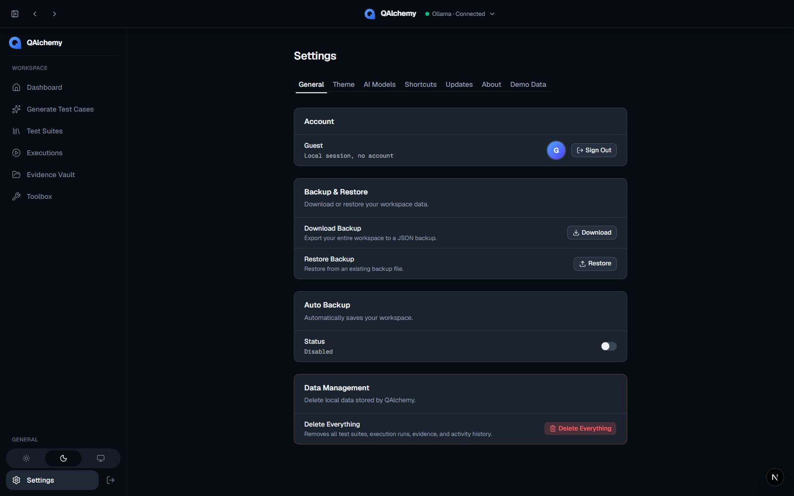

Everything you need to go from a blank requirement to a fully evidenced, executed test suite.
Introduction
What QAlchemy is, and the problem it solves.
QAlchemy takes a user story and acceptance criteria and turns it into a complete QA analysis in a single AI request: a requirement summary, extracted business rules, a risk assessment, generated test scenarios and cases, and a traceability matrix linking every case back to its source requirement.
From there, the same suite can be organized, exported to the format your team uses, executed with real Pass/Fail tracking, and backed by attached evidence, so a completed test run is a defensible record, not just a checkbox.
QAlchemy is a desktop-first workspace. Your requirements, generated suites, execution history, and evidence stay in a local workspace on your machine.
Launch it. QAlchemy sets up your local workspace automatically, with no external database or account required.
Complete the one-time setup screen to connect an AI provider (see below).

Connecting an AI Provider
QAlchemy is bring-your-own-key: it never bundles or resells model access.
Open Settings → AI Provider and choose one:
Anthropic (Claude): a strong default for the generation pipeline.
OpenAI: GPT-family models via your own API key.
Google Gemini: via your own API key.
Ollama: point at a local Ollama server for fully offline, self-hosted generation.
Keys are stored locally on your device and are sent only to the provider you selected, never anywhere else.
1. Generate Test Cases
From requirement to structured QA analysis in one request.
Open Generate Test Cases.
Provide your user story and acceptance criteria: plain text is fine.
Choose an output format: Classic (structured steps/expected results) or Gherkin/BDD (Given/When/Then).
Select which testing categories apply: functional, negative, boundary, security, accessibility, and more.
Generate. QAlchemy returns a requirement summary, business rules, risk assessment, scenarios/cases, and a traceability matrix.
Narrower, well-scoped acceptance criteria produce tighter, more relevant suites than a vague one-line story.
2. Manage Test Suites
Review, edit, and clean up generated coverage before it ships.
Browse and edit generated suites in one workspace.
Run AI Insights to flag likely duplicate cases and coverage gaps.
Use bulk actions to re-categorize or re-prioritize multiple cases at once.
Reorder cases to match your preferred execution order.
3. Export
Get your suite into the tools your team already uses.
From any suite, choose Export and pick a format:
Excel: full suite with categories, priority, and steps.
Azure DevOps: column mapping ready for direct import.
Jira / Xray: compatible with Xray test case import.
TestRail
Markdown and CSV: for docs or spreadsheet tools.
JSON: for custom pipelines.
PDF Test Plan: a formatted, shareable document.
4. Execute Suites
Turn a generated suite into a real, trackable test run.
Open Executions and start a new run.
Pick the suite to execute and fill in environment, build, and tester details.
Work through each case, marking it Pass, Fail, Blocked, or No Run.
Track progress live: pass rate, blockers, and cases remaining.
Reopen any completed run later to add notes or re-verify a fix.
5. Evidence Vault
Attach proof of testing so a "Pass" is backed by something concrete.
Open the Evidence Vault and create a case, a named container for related evidence rather than a folder.
Pin frequently used cases to the top.
Attach screenshots, screen recordings, or documents as you test.
Preview, zoom, rotate, and download evidence directly from the vault.
QA Toolbox Reference
Offline utilities that make no AI calls and no network round-trip.
JSON Formatter / Diff: pretty-print, validate, and diff two JSON payloads.
Regex Tester: live match highlighting against sample text.
JWT Decoder: inspect header/payload without sending the token anywhere.
Timestamp Converter: Unix, ISO 8601, and locale formats.
Test Data Generator: names, emails, addresses, and structured records.
Boundary Values Generator: min/max/edge values for a given data type.
UUID Generator: v4 UUIDs, single or bulk.
Bug Report Template: a structured starting point for consistent bug reports.
File Generator: dummy files of a given type and size for upload/limit testing.
Media Compressor: local image/video compression; nothing uploads.
Backup & Restore
Your workspace, protected on your own terms.
Download a full backup of your workspace on demand, or turn on auto-backup to a folder of your choice at a set interval. Restore from any backup file at any time. Backups never include your AI provider keys.
FAQ & Troubleshooting
Does my data leave my machine?
Your suites, runs, and evidence stay in your local workspace. The only outbound traffic is the requirement text sent to whichever AI provider you configured, using your own key.
Can I use QAlchemy without an internet connection?
The QA Toolbox works fully offline. Generation requires a connection to your chosen AI provider, unless you're running a local Ollama server.
What if a generated suite needs adjusting?
Re-run Generate with more specific acceptance criteria, or edit the returned cases directly in Test Suites; nothing is locked after generation.
Can I import an existing suite instead of generating one?
Yes, import from any of the supported export formats (Excel, CSV, JSON) via Test Suites.